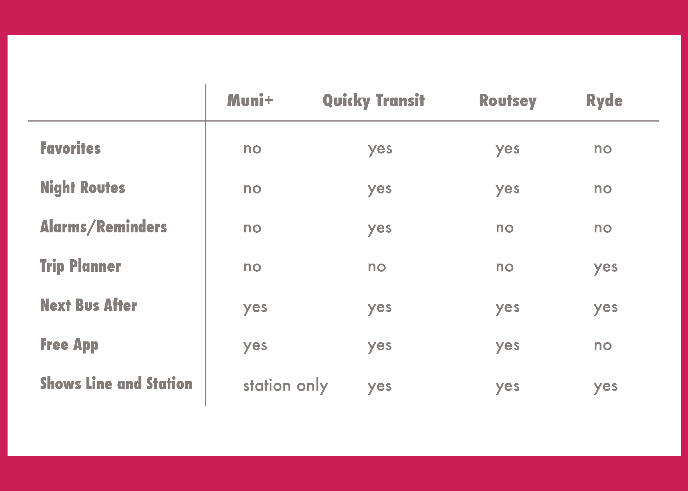
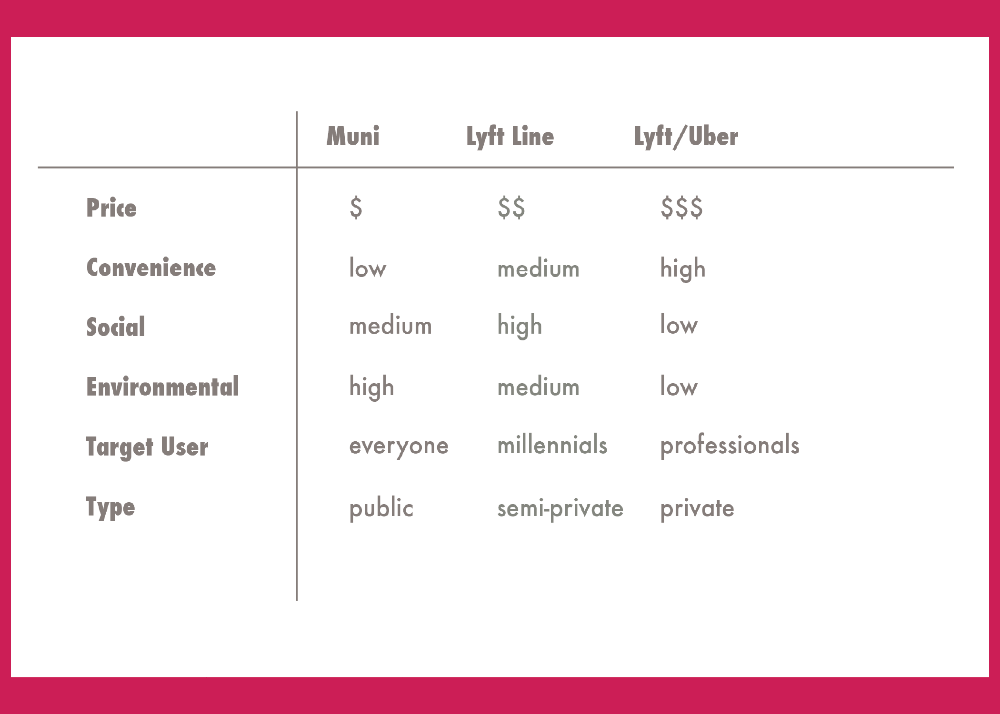
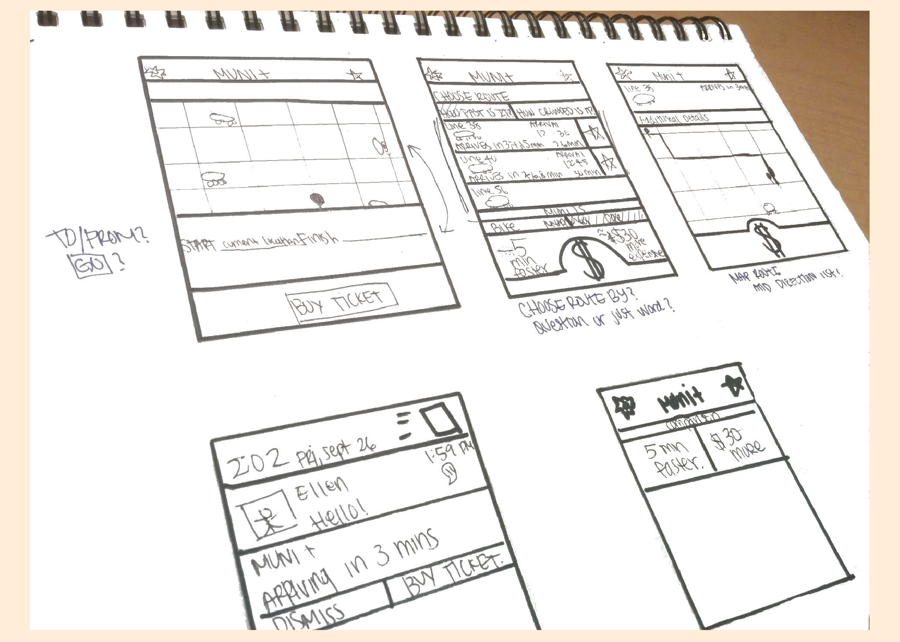
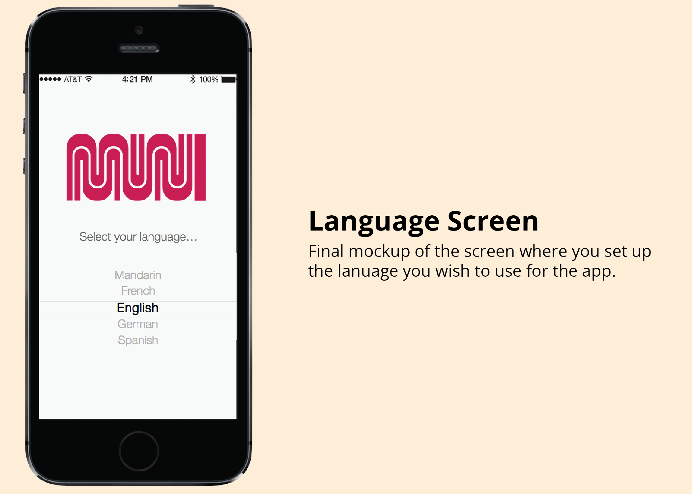

SFMTA
Mobile Application
Team Members: Nicolai Doreng-Stearns, Ellen Obriadtchikova, and Vasavi Reddy
My Role: User Experience and Visual Design
The Problem: SFMTA's ridership decreases drastically during off-peak hours. My team and I were tasked to find out why and to solve this problem through a mobile application.
The Research Phase
People avoid using Muni during off-peak hours. Through our user research, we found the key issues people have with the Muni system include cleanliness, safety concerns, inconvenience, and a seamless way to pay via mobile. Because the first two were infrastructural issues, we decided to keep our focus on the last two issues as they could be fixed with a digital app.
As we were talking to different users, we found that they either preferred using third-party Muni apps, using car services such as Lyft or Uber, or driving and riding their own cars and bikes. While analyzing the market, we came across features that worked and didn' t work. While we wanted to differentiate the app from its competitors, we also wanted to incorporate some of these features we found such as full-trip planning and GPS tracking into our app.
Features on Different Muni Apps
Different Factors on Muni vs. Car Services
The Ideation Phase
After finding the two main issues, we started to gather ideas on how to design for these problems. The four main features we decided to focus on were: full-trip planning, GPS tracking, mobile payments, and cost comparison. From here we created sitemaps and user flows to help guide us through the process of using the app. Using this information, we created our initial sketches of the different pages, and then produced initial wireframes and prototypes.
Initial Sketches
The Iteration Phase
Once the prototype was put together, we conducted a lot of usability testing. We asked different users to go through the different user flows in the prototype to see if they were effectively able to complete the goal.
We discovered that the app was simple and easy-to-use, which is what we were trying to achieve. One of the biggest issues that people had was with the route list. While designing the route list, we thought the information we put on there was self-explanatory, but we realized through usability testing that we needed to make the wording more clear. Using this information, we were able to do some iterations and fix the issues users had.

Final Wireframes
Reflection and Next Steps
The biggest lesson I learned from this design process was that I needed to focus on the underlying problem: riding the bus is inconvenient. Early on in the process, we came up with many ideas, such as an incentives and rewards system, on how to make more people ride the Muni during off-peak hours. While all of these ideas seemed great, we learned that without fixing the underlying issues, no amount of incentives or rewards would make users ride the Muni more. Once infrastructural issues are resolved, we could start to iterate and add these additional features that would increase Muni ridership.
